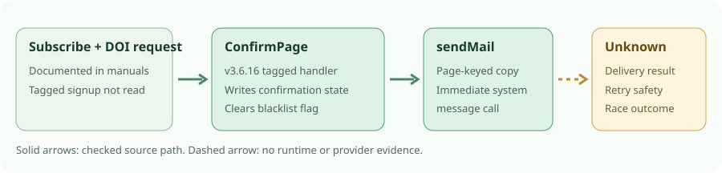

phpList v3.6.16 · source audit · 3 Oct 2026
phpList has a post-confirmation message path, not a welcome sequence.
For one immediate email after double opt-in, phpList is a conditional research option. Its v3.6.16 confirmation handler calls sendMail with a page-keyed subject and body after a previously unconfirmed subscriber confirms. This is a system confirmation message, not a separate campaign. No installation, form submission, sink test, SMTP transaction or real send was performed.
Which job fits?
| Job | Finding | Boundary |
|---|---|---|
| One immediate welcome after DOI | Conditional fit: the tagged handler selects page-keyed confirmation text and calls sendMail when TEST is off. | Source path only. It does not prove receipt, exactly-once delivery or safe suppression under races. |
| Download link in that email | The configuration guide and subscribe-page manual describe editable global and per-page transactional text. A URL can be placed in the body. | Content placement is not a secure file entitlement or proof of delivery. Review the host and access separately. |
| Delayed or multi-step sequence | No timer or sequence appears in the checked confirmation path. The autoresponder documentation describes a separate plugin, campaign and cron flow. | Plugin compatibility with this exact tag was not tested. Ordinary campaign scheduling is not a confirmation-triggered sequence. |
What the source establishes

The tagged router invokes ConfirmPage. The tagged handler reads the earlier confirmed value, then writes confirmed=1, blacklisted=0 and optedin=1. If the earlier read was false and the session flag is absent, it sends the page-keyed after-confirmation message. A later sequential click sees an already-confirmed branch. The code does not show an atomic compare-and-send gate, and the return from sendMail is not checked before recording a confirmation statistic. A concurrent click or unsubscribe/confirmation interleaving therefore remains a test question, not an observed incident.
The configuration guide documents an editable message and subject received after confirming, separate from the confirmation request and campaigns. The subscribe-page manual documents page-level transaction messages initialized from global settings. The tagged send uses page-keyed values, but the exact-tag signup library, page editor and configuration fallback were not readable in this audit. Documented override behavior is not exact-tag proof; approve global defaults and every active page before a private send test.
Release and operating boundary
The official v3.6.16 release is dated 26 May 2025 and points to short commit 69915ff; the 27 May post calls it a security release. The tagged repository labels phpList 3 AGPLv3 and includes licence files. That does not classify plugins, dependencies, hosted service, SMTP provider or download host. The release list warns GitHub-generated source archives are incomplete for production. An official 3.6.16 package listing was seen, but bytes and hash were not checked.
| Before any send-ready claim | Needed evidence |
|---|---|
| Artifact and exact path | Verify a complete distribution/hash and the tagged signup, editor and config fallback. Test the version with a pinned PHP/database combination; current requirements are not a 3.6.16 install result. |
| Consent, suppression and copies | In a private fictional-data, sink-only fixture, trace form → request → confirm → after-confirmation email; check page overrides, duplicate and parallel clicks, unsubscribe-before-confirm, blacklist, rejection and retries. The blacklist-clearing confirmation write makes that case especially important. |
| Operator controls | Approve request and welcome copy, download host, consent record, opt-out handling, sender/SMTP/DNS, provider and bounce reconciliation, and tested DB/config/assets restore. Installation guidance and the bounce manual describe work; they do not show it completed here. |
No public form, recipient, SMTP transaction, sink, provider receipt, backup restore or runtime test was used. Do not infer secure download access, deliverability or exactly-once sending from editable message text.
Compare this narrow job
The 1 October Listmonk v6.2.0 tagged trace found no distinct native welcome in its inspected confirmation path, and the 2 October follow-up could not run a private fixture. phpList has a stronger exact-tag source finding for this one immediate message, not stronger proof of suppression or delivery. The Keila v0.30.3 audit remains documentation-led for the welcome job with package and recovery gates open. None is send-ready here.